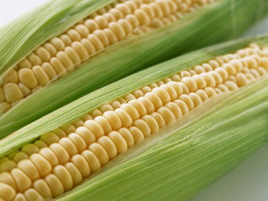
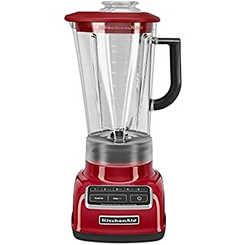

Chippos® snacks are much-loved cheesy treats that are fun for everyone. Learn more about
Chippos
here!
How Chippos are Made
Ingredients Used:
Chippos are manufactured by blending corn and water.


The Process:
The mixture is heated under pressure, and then extruded through a die.
The texture of the snack is formed as a result of contact with hot air, causing steam in the mixture to expand
and creating its characteristic texture.
After oven-drying or frying, the product is then tumbled with the desired flavor components (the original
Crunchy Chippos are fried). The process takes approximately 19 minutes and each half hour an in-house lab team
inspects and taste-tests each batch.
At this point, the result of the inspection is determined by comparing each batch to product sent from
Fruito-Maize headquarters.
Other flavor and format variations such as Chippos Puffs, Chippos Paws, Chippos Twists, Chippos Balls, and Chippos
Whirls are all finished with a drying stage in large ovens.
As of 2010, Fruito-Maize has 14 fried-Chippos plants in 11 states throughout the United States.